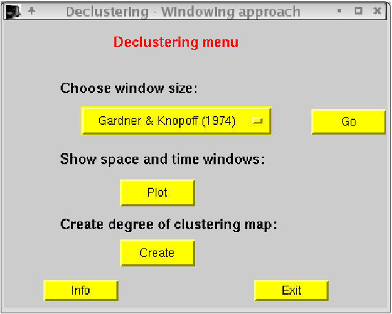
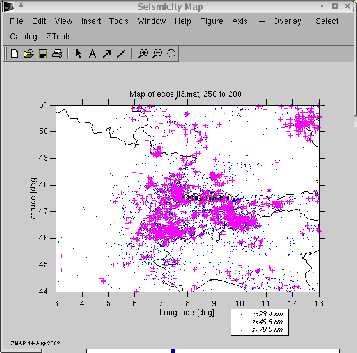
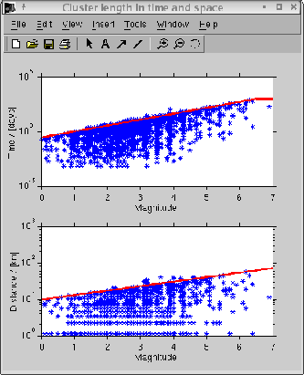
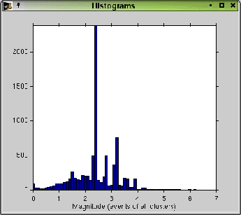
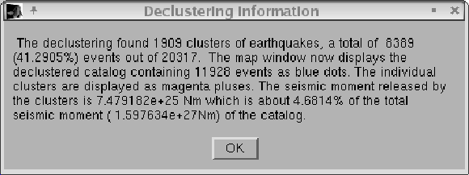
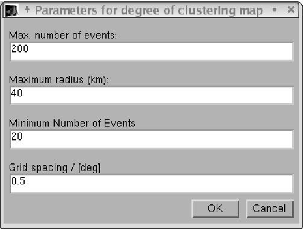
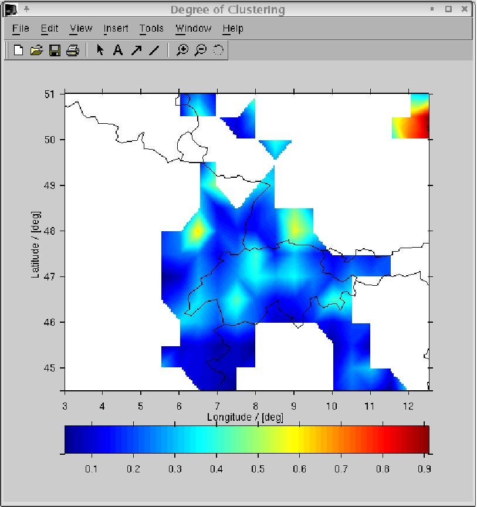

Nächste Seite:Literatur
Aufwärts:Declustering
by using spatial
Vorherige Seite:Method
In order to start the declustering algorithm using
the windowing approach by Gardner & Knopoff [
1
], choose "Decluster the catalogfrom the ZTools pulldown
menu, then "Decluster using Garnder & Knopoff". Thereafter,
a little menu pops up giving the choice of the window to be applied.One
can have a look at the windows by pressing the "Plot" button (see Figure
2
and 3
).
Abbildung 3: Declustering menu
for the windowing approach by Gardner & Knopoff [
1
].
|

|
After choosing the window, start the declustering procedure by pressing
the "Go" button. "Exit" gets you out of the declustering procedure.
During the process, waitbars show the progress of the declustering.
The process finishes displaying the cluster location as magenta pluses
in the seismicity map and the declustered catalog as dots (Figure
4
). The length of the clusters compared to the original
applied window is shown in the "Cluster length in time and space"
window (Figure
5
) and the overall distribution of magnitudes of the
events detected in the clusters is shown in the "Histogram" window
(Figure 6
).
Abbildung 4: Seismicity window
output for the Swiss catalog ECOS Ver. 31.03.2002 from declustering
using Gardner & Knopoff [1
]. Dots indicate declustered catalog, magenta pluses
show cluster location.
|

|
Abbildung 5: Comparison of actual
determined cluster (blue stars) length and predefined windows (red
lines). Higher values result from adding the time difference between
originally chosen earthquake and strongest shock in the sequence
(see text for description). Example for the ECOS catalog Ver. 31.03.2002
using Gardner & Knopoff windows.
|

|
Abbildung 6: Histogram of magnitudes
of all events detected in clusters for the ECOS catalog Ver. 31.03.2002
using Gardner & Knopoff windows.
|

|
Finally, information on clustered events, events
of the declustered catalog, and moment release is displayed in
the "Decluster informationmessage box (Figure
7
).
Abbildung 7: Decluster information
message box. Example of the ECOS catalog Ver. 31.03.2002 using
Gardner & Knopoff windows.
|

|
After the declustering process, one can map out the
degree of clustering of the catalog using the "Create"--button.
Another window pops up letting the user define the important parameters
(Figure 8
):
- Max. number of events: Sets a limit for the number of events used at
each gridnode.
- Maximim radius (km): Maximum radius to select earthquakes for determining
the degree of clustering.
- Minimum number of events: A smaller number produces a white spot on
the map.
- Grid spacing / [deg]: Grid spacing in decimal degree.
Abbildung 8: Parameters for degree
of clustering map.
|

|
The algorithm sets up a grid and calculates the degree of clustering
per gridnode, i.e. the number of events in clusters divided by the number
of independent events regardless of time. Default values are given,
but are strongly dependent on the region one is working on. It is
worthwhile testing different parameters. The grid points are displayed
in the seismicity map. Figure
9
shows an example for the european region using the ECOS catalog
(Ver. 31.03.2002) of the Swiss Seismological Service.
Abbildung 9: Degree of declustering
map for Central Europe using ECOS Ver. 31.03.02 .
|

|
The catalog can be reset to the original one using the Catalog pulldown
menue from the "Seismicity map" window.
As mentioned earlier, the definition of the window length in space
and time are crucial to the selection of clusters. In case that the
user wants to apply other window length to the actual catalog, one
can easily edit the function calc_windows.m and add other
functions. For interactive usage of the new function, the script
declus_inp.m needs a little change in the string property
of the variable inp1 . If the user wants to investigate the
cluster in more detail, use the Matlab help-function for the script
calc_decluster.m . The clusters and mainshocks are indicated
through vectors, each cluster having a single number. With these, one
can select single clusters or whatever one wants to have a look at. Have
fun!
These scripts where implemented by J. Woessner. Please
address your questions to woessnerseismo.ifg.ethz.ch or stefanseismo.ifg.ethz.ch.
Nächste Seite:Literatur
Aufwärts:Declustering
by using spatial
Vorherige Seite:Method
Jochen Woessner 2002-08-15